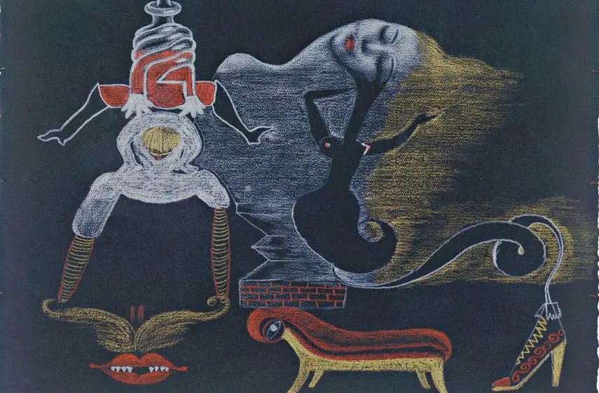
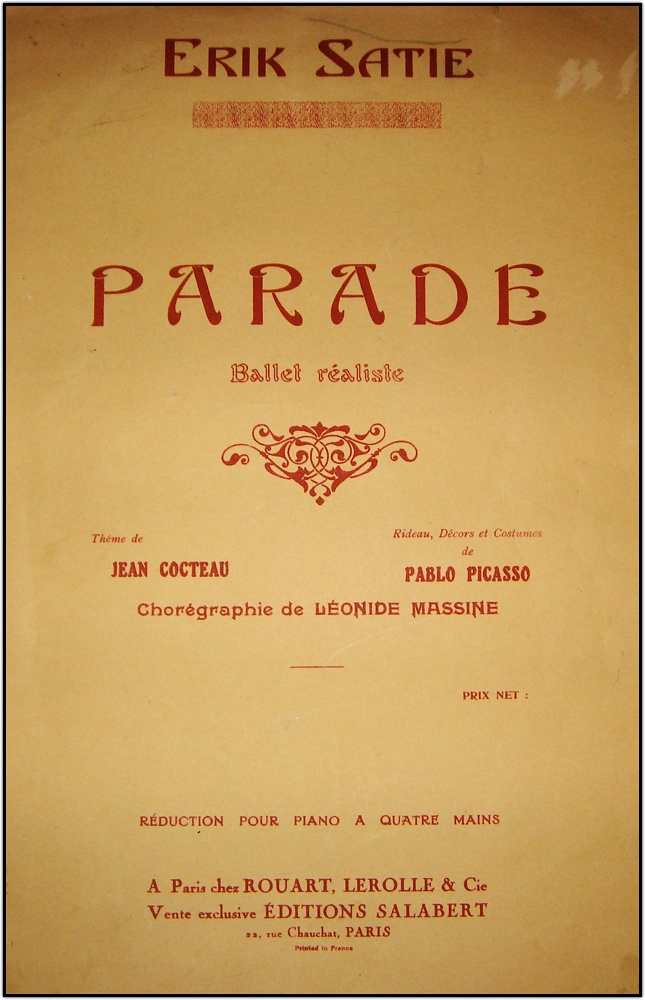
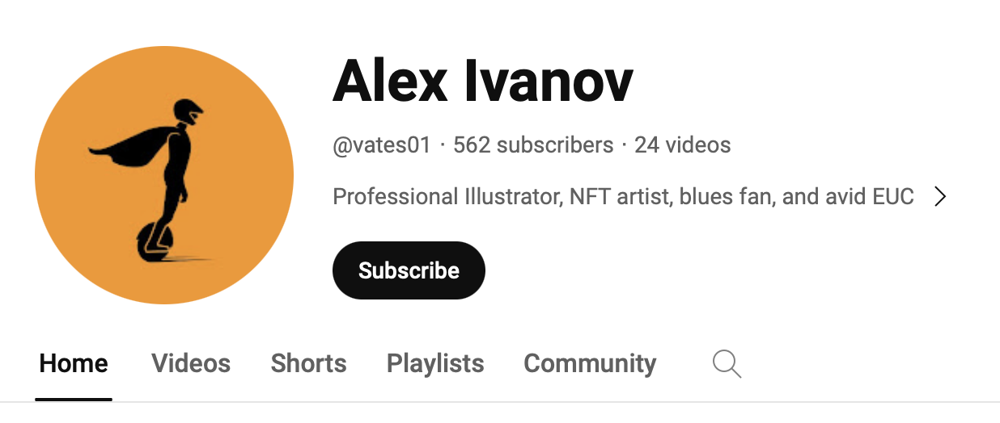

Do what?
What is this Movement that would have so many questionable people, situations, and terms involved?
According to History.com, the Twenty-Century Art Movement, Surrealism, “has had a lasting impact on painting, sculpture, literature, photography, and film.” [1] (History.com Editors) Evolving from the Dada movement, Surrealism represented the oppressions of government, rationality, logic, dreams, or nightmares, “the uncanny, disregarded, and unconventional,” [2] (Tate Museum) superstitions, fantasy, and all that was forbidden. Inspired by Sigmund Freud, these Surrealists incorporated his dream and unconsciousness theories into their art. Surrealists challenged imposed societal values and norms—in search of FREEDOM—by bestowing imagery through art and writings that were pure juxtapose. “With the absence of all control exercised by reason, aesthetics, and morals, the movement’s artists discover enchantment and unusual beauty in the unexpected, the unsettling, the outlandish, and the unorthodox.” [3] (Artchive.com) A literal revolution. With all that was occuring during this time period, World Wars I and II, the rise of Communism, Anti-Semitisism and Facisism, it can easily be assumed that these artists sought to create a new kind of reality to make sense of the world. These revoluntists, or “avant-garde artists, endured public ridule both in Europe and America, suffered political persecution in Germany. The most dramatic example of this persecution was the infamous Entartete Kunst [4] exhibition, which attracted more than two million local vistors and another million traveling visitors by the end of its four months.”[5] (Cengage.com) Some of these artists had art confiscated or burned, were exiled from their homelands, jailed, treated so harshly that they committed suicide, and even ordered to be executed.[INSERT CITATIONS]

Hitler's preview visit of the exhibition July 16, 1937. The Nazi leader paused in front of the Dada wall, where the artworks were purposely hung askew. [6]
So, how did this unrealistic Art movement begin?
It “officially” began in Paris with a trained psychiatrist, André Breton, who was a Dada [7] (Artland Magazine) poet, when he wrote his first Surrealist Manifesto in 1924. Unofficially, the movement originated as early as 1917, with the juxtaposing [contradictory] artworks of Giorgio de Chirico. [8] (Christie's) While Chirico, an Italian author and artist, was NOT a Surrealist, his “images transcended their physical appearances;” his Metaphysical Painting movement (Kleiner) impacted German Dadaist, Max Ernst, [9] (Max-Ernst.com) even after Chirico had forsaken that style. Also in 1917, in the introduction to the ballet, “Parade” the French avant-garde poet, Guillaume Apollinaire, created the term “surrealist” which translates “beyond reality.” (Artchive.com)

Giorgio de Chirico, 1914, The Song of Love, Museum of Modern Art, New York
As the Dada movement was ending, Ernst took this inspiration with him when he moved to Paris in 1922. “The disorientating illogic of Ernst’s collages fueled Breton’s imagination as he became more entrenched in Sigmund Freud’s ideas.” (History.com Editors) Breton, along with three other French poets, were intoxicated by Freud’s psychological theories and dream studies, as well as the political ideas of Karl Marx. The Met’s, James Voorhies, articulated it best when he wrote that the group “used Freudian methods of free association, their poetry and prose drew upon the private world of the mind, traditionally restricted by reason and societal limitations, to produce surprising, uexpected imagery. The cerebral and irrational tenets of Surrealism find their ancestry in the clever and whimsical disregard for tradition fostered by Dadaism a decade earlier.” [10] (Voorhies)
So what IS the deal with Surrealism?
A publication for a literary movement, "The Manifesto of Surrealism," by André Breton, was based on experimenting with writing about the unconscious or dream states, the world of imagination, and irrationality. [11] (Gustin and Gustlin) Originally, these surrealist poets were hesitant to affiliate with visual artists. They felt that the techniques of visual arts were too daunting and therefore would constrain the manifestation of unstructured freedom of expression. However, they did highly esteem several visual arts – Giorgio de Chirico and Pablo Picasso being two of them. The artists’ works were considered worthy because of the “analytical, provocative, and erotic qualities.” (Voorhies) With Dada being a catapult for these young experimenting Surrealist artists, they created a passage from conformist and traditional art to the bewildering. Coming from multiple countries, allowed for an emergence of diversity and representation of illustrations from the “subconscious mind, a place of superior authenticity and the absence of control. Surrealist work was tense and sexual based on hidden psychological forces from the subconscious. The rational mind was suppressed.” (Gustin and Gustlin)

André Breton, 1933, Landscape
Surrealism was greatly shaped by Sigmund Freud and especially his book, “The Interpretation of Dreams.” Within the book, Freud penned how dreams unveiled an authenticity of “human emotion and cravings stemming from the inner mind and its revelation of sex, violence, and longing.”. (Gustin and Gustlin) Inspite of the deep connection to the Freudian methods, eccentricity was their vantage point rather than madness. The most distinguishable element of Surrealism is imagery. Oftentimes, the viewer is made to feel uncomfortable and his/her general beliefs of imagery and art are challenged by the bizarre, uncanny, or puzzling artworks.
Snippets of Surrealism
Experiments & Techniques
- Automatism
- Drugs
- Hypnotism
- Cubanism
- Self-Induced Hallucinations
- Film-Making
- Seductive Battles
- Frottage or Decalcomania
- Grattage
- Saturated Colors
Characteristics
- Elements of Nature
- Juxtaposition
- Objectification of the Female Body
- Women, Women, Women
- Collages
- Unusual Combinations of Elements & Colors
- Irrational
- Bizarre Grotesque Themes
- Sexual Themes
- Symbols of Fear
- The Taboo
Influences
- Sigmund Freud
- Communism
- Karl Marx
- World Wars I & II
- Aldolf Hitler
- Fascism
- Political Ideas
- Struggles of the Time Period
- Revoluntionary Politics
- Political Ideas
Watch the 1917 Ballet “Parade:Created by Erik Satie, Pablo Picasso & Jean Cocteau, It Provoked a Riot and Inspired the Word “Surrealism.” on OpenCulture.com

